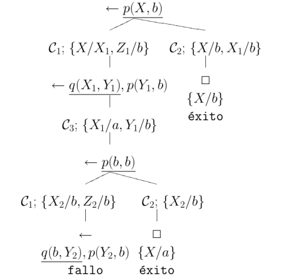

Un árbol (de búsqueda) \(SLD\) \(\tau_\varphi\) para \(\Pi \cup \{{\cal G}\}\) (usando la regla de computación \(\varphi\)) es un conjunto de nodos que cumplen:
Sea el programa definido
\(\Pi = \{ {\cal C}_1 : p(X,Z) \leftarrow q(X,Y) \wedge p(Y,Z) \\ {\cal C}_2 : p(X,X) \leftarrow \\ {\cal C}_3 : q(a,b) \leftarrow \}\)
y la meta definida \({\cal G} \equiv\leftarrow p(X,b)\).
Un árbol de búsqueda \(SLD\) para \(\Pi \cup \{{\cal G}\}\) usando una regla de computación que selecciona el átomo más a la izquierda dentro de la meta considerada.

Sea \(I\) un conjunto índices y conjunto no vacío de modelos de Herbrand de un programa \(\Pi\), \(\{{\cal M}_i \mid (i \in I) \wedge ({\cal M}_i\) es modelo de \(\Pi)\}\). Entonces, el conjunto \(\bigcap_{i \in I} {\cal M}_i\) es un modelo de Herbrand de \(\Pi\).
\({\cal M}_i(\Pi) = \{{\cal A} \mid {\cal A} \in {\cal B}_{\cal L}(\Pi) \wedge \Pi \models {\cal A}\}\)
\(\Pi = \{{\cal C}_1 : q(X) \leftarrow p(X), {\cal C}_2 : p(a) \leftarrow , {\cal C}_3 : q(b) \leftarrow \}\).
La interpretación modelo mínimo de Herbrand es:
\({\cal M}(\Pi) = {\cal I}_{14} \cap {\cal I}_{16} = \{p(a),q(a),q(b)\}\)
Sea \(\Pi\) un programa definido. El operador de consecuencias lógicas inmediatas \(T_{\Pi}\) es una aplicación \(T_{\Pi} : \wp({\cal B}_{\cal L}(\Pi)) \longrightarrow \wp({\cal B}_{\cal L}(\Pi))\) definida como:
\(T_{\Pi}({\cal I}) = \{ {\cal A} \mid {\cal A} \in {\cal B}_{\cal L}(\Pi) \wedge ({\cal A} \leftarrow {\cal A}_1 \wedge \ldots \wedge {\cal A}_n ) \in {\cal B}asicas(\Pi) \\ \wedge \{{\cal A}_1, \ldots, {\cal A}_n \} \subseteq {\cal I} \}\)
donde \({\cal I}\) es una interpretación de Herbrand para \(\Pi\) y \({\cal B}asicas(\Pi)\) es el conjunto de instancias básicas de las cláusulas de \(\Pi\).
\({\cal M}_{\Pi} = mfp(T_{\Pi}) = T_{\Pi} \uparrow \omega\)
\(\Pi = \{{\cal C}_1 : q(X) \leftarrow p(X), {\cal C}_2 : p(a) \leftarrow , {\cal C}_3 : q(b) \leftarrow \}\).
Se alcanza el punto fijo en la tercera iteración y por consiguiente,
\({\cal M}_{\Pi} = \{p(a),q(b),q(a)\}\).